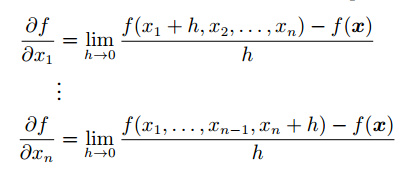
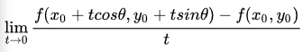
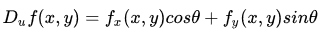
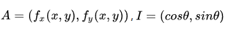
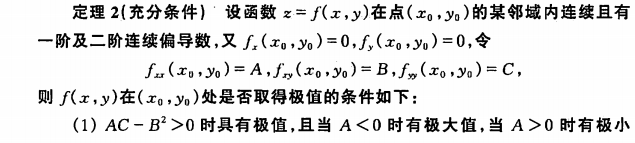
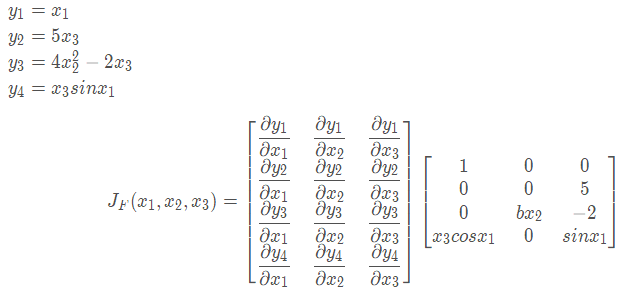
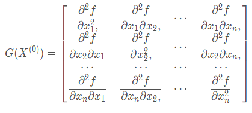

多变量微积分 Calculus Part2¶
1. 偏导数¶
1.1 偏导数的定义¶
在单变量微积分中，我们已经知道了导数就是函数的变化率。对于多元函数，我们也可以研究其变化率。
以二元函数 z = f(x,y) 为例，如果将 y 看为是固定的，这时 z 就是 x 的一元函数，函数对 x 的导数就称为该二元函数 z 对 x 的偏导数。推广开来，一个多元的函数的偏导数，就是它关于其中一个变量的导数，而保持其他变量恒定。与单变量函数的导数类似，偏导数的公式如下：
如果多元函数 z 在定义域内每一点处对 x 的偏导数都存在，那这个偏导数就称为对自变量 x 的偏导函数。
需要注意的是，多元函数的偏导数存在只能保证某点 P 沿着平行于坐标轴的方向趋近于 P0 时，函数值 f(P) 趋于 f(P0)，但不能保证 P 按任何方式趋近于 P0 时函数值都趋于 f(P0)。换句话说，偏导数只反映了函数沿着坐标轴正方向上的变化率，而不是任意方向。
偏导数的表示符号为 ∂，反映了多元函数沿坐标轴正方向的变化率。

2. 方向导数¶
前面提到了，函数的偏导数是函数沿着坐标轴正方向上的变化率，但如果我们要求函数在任意方向上的变化率该肿么办？这时就引入了方向导数的概念。

假设 z = f(x,y) 在 xyz 坐标系中是这样一个曲面，点 P(x0,y0) 是定义域中的一个点。我们已经知道通过求偏导数能知道该点 P 关于x轴和y轴的切线斜率，现在要求该点沿着单位向量 u =cosθ + sinθ （θ是该单位向量与x轴的正向夹角）方向的变化率（即P沿着射线L方向的变化率），类比一元函数导数的定义，如果下列极限存在：
则这个极限是函数f沿着u方向的方向导数。随着θ的变化，可以求出任意方向的方向导数。因此，方向导数反映的是多元函数在 P0 点沿着任意方向 u 的变化率，即函数的增量与 P 到 L 上另一点 P0 的距离的比值的极限。
在求上述极限时，除了用极限定义外，还可以用偏微分方法简化计算，直接得到方向导数公式：
方向导数公式的具体证明可以参考参考资料中同济大学高等数学教材 P102 页。
3. 梯度¶
在说明方向导数的时候，我们得到了方向导数公式：
设：
则这个方向导数的数量积为：

如果要让方向导数取得最大值，则夹角要为0度，即向量 I（即变化率最快的方向）与向量 A（当点P(x,y)确定时，该向量也确定）平行的时候，两者的数量积最大，函数 f(x) 的增长最快。A 即是梯度向量。换句话说，函数某点处的梯度就是函数对各个自变量的偏导数依次排序形成的向量。梯度即表示函数在该点处的方向导数沿着该方向取得最大值，即函数在该点处沿着该方向（此梯度的方向）增加最快，变化率最大（为该梯度的模）。
同样的，当向量I与向量A的夹角为180度时，函数值减少的最快，函数沿着这个方向的方向导数达到最小值。
最后，总结一下上面三节的关键概念:
- 方向导数：是一个数；反映的是f(x,y)在P0点沿方向u的变化率。
- 偏导数：是多个数（每元有一个）,是指多元函数沿坐标轴方向的方向导数，因此二元函数就有两个偏导数。
- 偏导函数：是一个函数,是一个关于点的偏导数的函数。
- 梯度：是一个向量,每个元素为函数对一元变量的偏导数,它既有大小（其大小为最大方向导数），也有方向。
4. 多元函数的极值¶
与一元函数的情况一样，机器学习中我们经常会遇到多元函数求极值的问题。极大值和极小值统称为极值。需要注意的是，极值与最值不同，极值是一个局部概念，是在一个特定的邻域上的最大或最小值，因此也称为局部最大值或局部最小值。下面我们看如何求极值。
4.1 极值的必要条件¶
回忆一元函数求极值，如果 x 是极值点，且f’(x) 存在，则f’(x)必为0（或不可导点），但反过来导数为0的点不一定是极值点，此为一元函数极值的必要条件。
多元函数极值的必要条件也类似，以二元函数为例，设 z=f(x,y) 在某点取得极值，则该点处的梯度必为零向量，既每个偏导数都为零。
另外，定义梯度为零向量的点为多元函数的驻点。具有偏导数的多元函数的极值点必定是驻点，但驻点不一定是极值点。非极值点的驻点称为鞍点。
4.2 极值的充分条件¶
回忆一元函数求极值的过程： 如果 f(x) 在 x0 处具有二阶导数且 f’(x0)=0, f’‘(x0)!=0，则：
- 当 f’‘(x0)<0 时，函数在该点取得极大值（因为函数在该段区间是向上凸的）
- 当 f’‘(x0)>0 时，函数在该点取得极小值（因为函数在该段区间是向上凹的）
类似的，二元函数求极值过程如下：

5. 多元函数求导¶
5.1 Jacobian矩阵¶
将一个由m个函数组成的列向量，对输入向量 x=(x1,x2...xn)求导，则结果是一个一阶偏导数组成的矩阵，这样的矩阵称为雅克比矩阵（Jacobian）

例如，对下列函数求导的结果是：
5.2 Hessian矩阵¶
Hessian矩阵是由目标函数 f(x) 在点x处的二阶偏导数组成的n阶对称矩阵。函数在 x0 处的 Hessian 矩阵如下：
存在如下结论：
当G是正定矩阵时，函数f在X0处有极小值 当G是负定矩阵时，函数f在X0处有极大值 当G是不定矩阵时，函数f在X0不是极值点
Hession矩阵可以作为二阶泰勒级数在多元下的展开，因此可以使用在牛顿法求极值。
5.3 常用的函数求导等式¶

References
| [1] | 《高等数学（第六版）》同济大学数学系 编，高等教育出版社 |
| [2] | 《Mathematics for Machine Learning》, Marc Peter Deisenroth、A Aldo Faisal, Cheng Soon Ong, Cambridge University Press. https://mml-book.com |